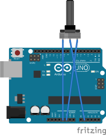

Potentiometer
पोटेन्सियोमिटर
A variable resistor (knob). The center pin (wiper) voltage changes as you turn it — Arduino reads it as 0–1023.
What it does · के गर्छ
A variable resistor (knob). The center pin (wiper) voltage changes as you turn it — Arduino reads it as 0–1023.
Pins on the component · कम्पोनेन्टका पिन
| Pin | Type | Role |
|---|---|---|
| Pin 1 | End | Connect to 5V |
| Pin 2 (wiper) | Signal | To analog pin |
| Pin 3 | End | Connect to GND |
Connect to Arduino Uno · UNO मा जडान
Example wiring (you may use other pins if you update the code). See Uno pinout.

Arduino code you need · आवश्यक कोड
Example use case · उदाहरण
Knob controls LED brightness — Turn pot to dim an LED on D6.
const int potPin = A1;
const int ledPin = 6;
void setup() {
pinMode(ledPin, OUTPUT);
}
void loop() {
int val = analogRead(potPin);
analogWrite(ledPin, val / 4);
}